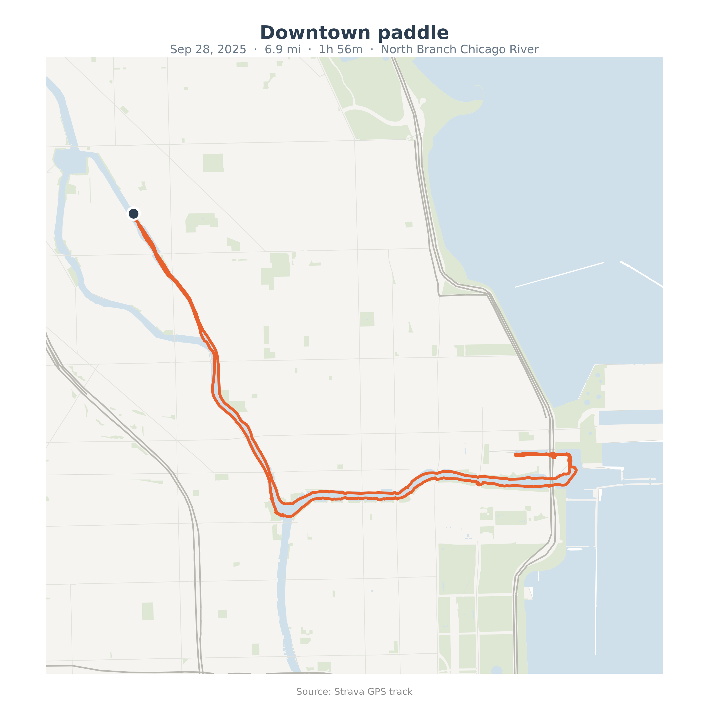
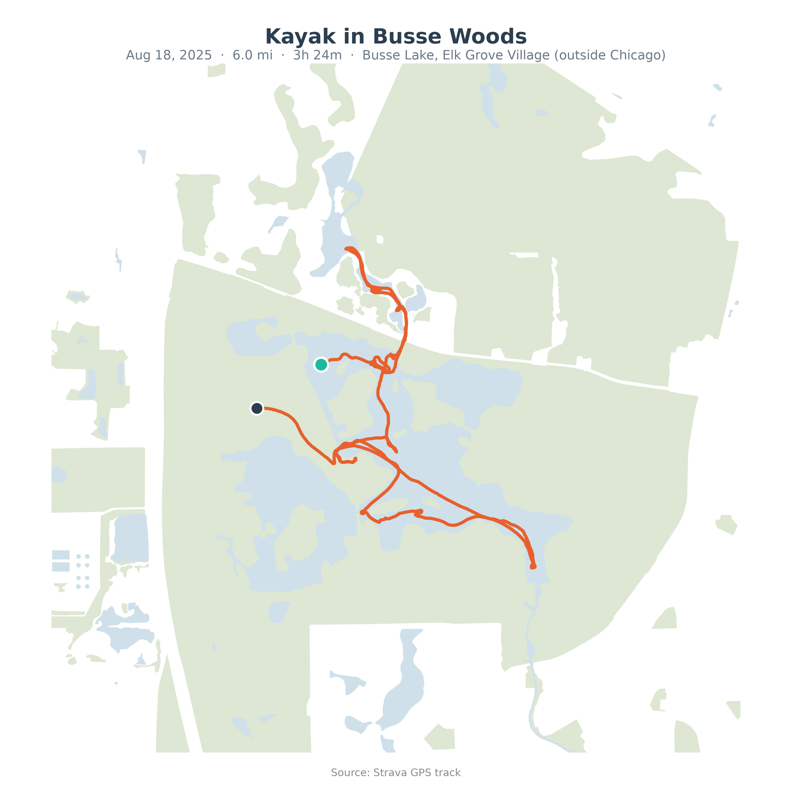
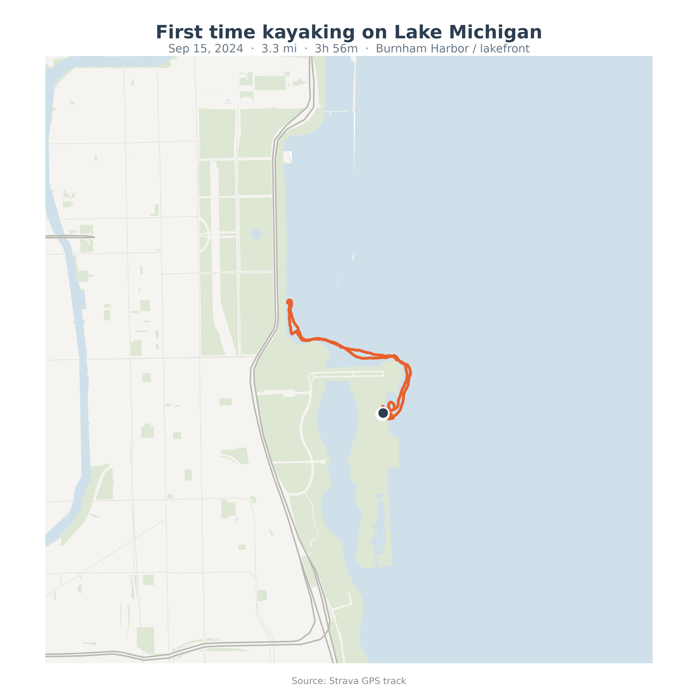
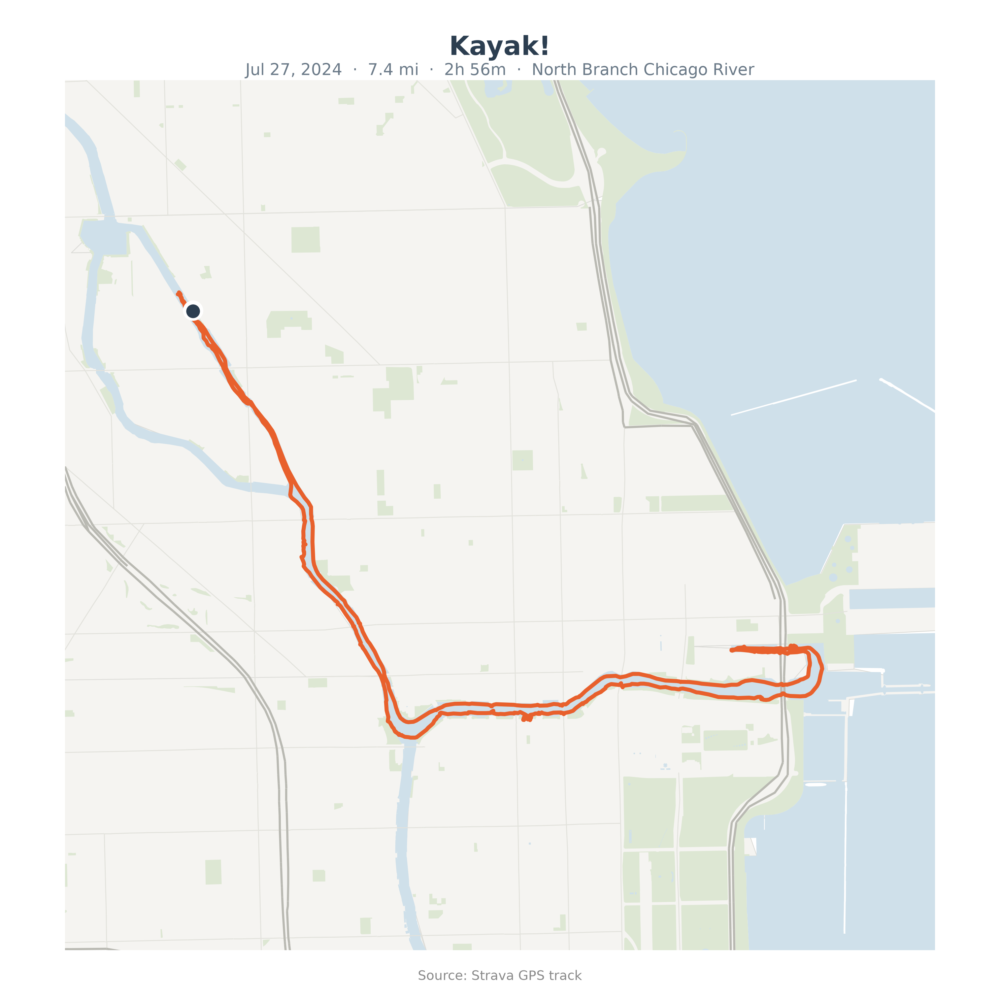
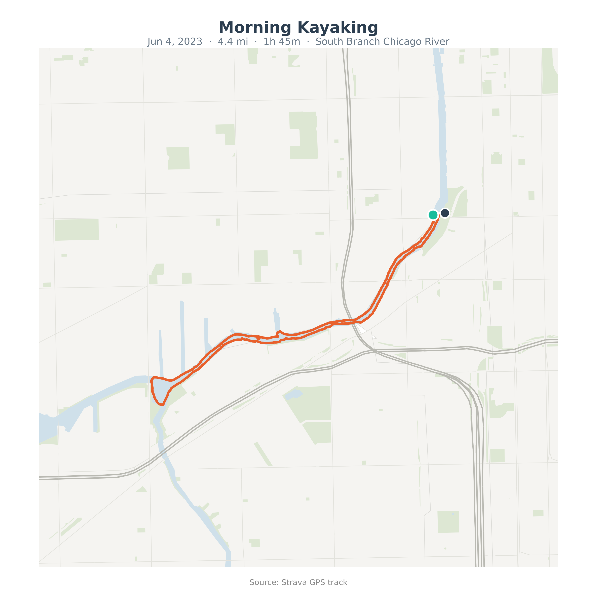

Downtown paddle
North Branch Chicago River · Sep 28, 2025
6.9 mi
Distance (11.0 km)
1h 56m
Time on water
3.5 mph
Avg speed (incl. stops)
Kayaking
Activity type
GPS routes from Strava, mapped on an OpenStreetMap-based basemap

North Branch Chicago River · Sep 28, 2025

Busse Lake, Elk Grove Village (outside Chicago) · Aug 18, 2025

Burnham Harbor / lakefront · Sep 15, 2024

North Branch Chicago River · Jul 27, 2024

South Branch Chicago River · Jun 4, 2023